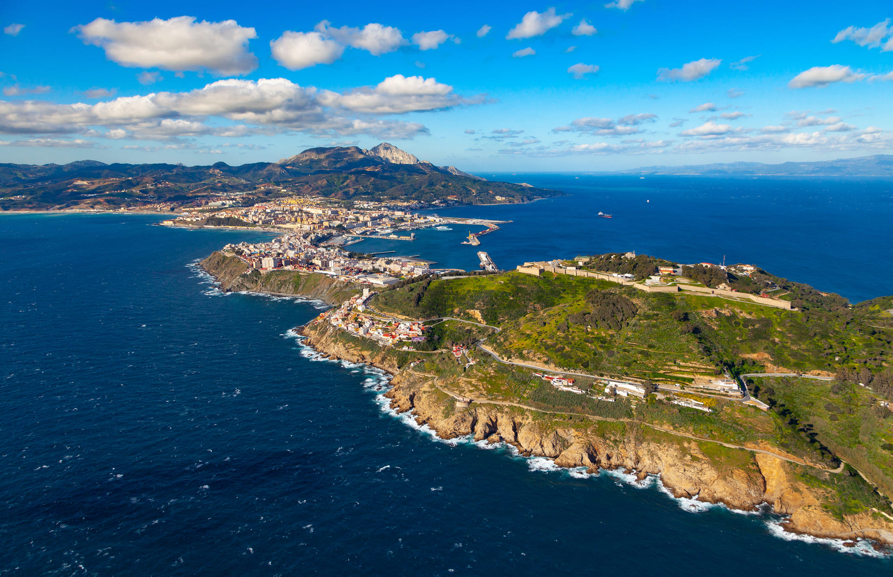

Sitios de Interes
Sus miradores
Ceuta, enclavada entre el mar Mediterráneo y el océano Atlántico, ofrece una serie de miradores espectaculares que permiten disfrutar de vistas panorámicas únicas. Entre los más destacados se encuentra el Mirador de Isabel II, desde donde se puede admirar el Estrecho de Gibraltar y las costas de Marruecos en días despejados. Otro imprescindible es el Mirador de San Antonio, situado en el Monte Hacho, con vistas tanto al puerto como a la ciudad amurallada. Estos puntos no solo ofrecen paisajes impresionantes, sino que también son lugares ideales para disfrutar de la naturaleza y de la historia que rodea a esta ciudad multicultural.
